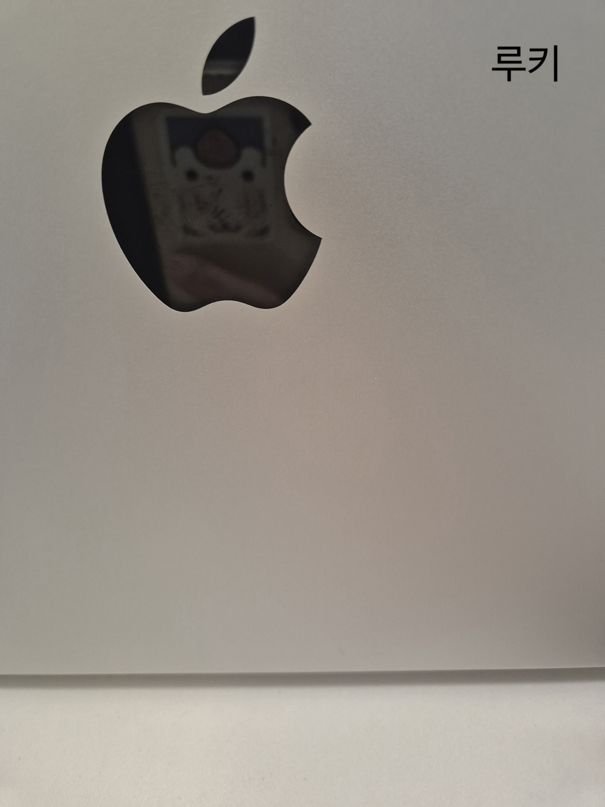
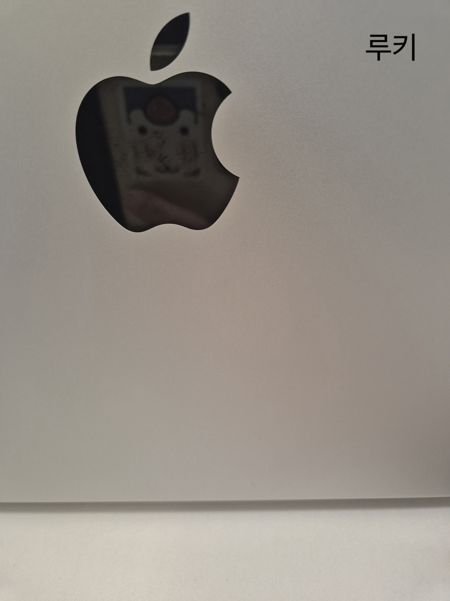
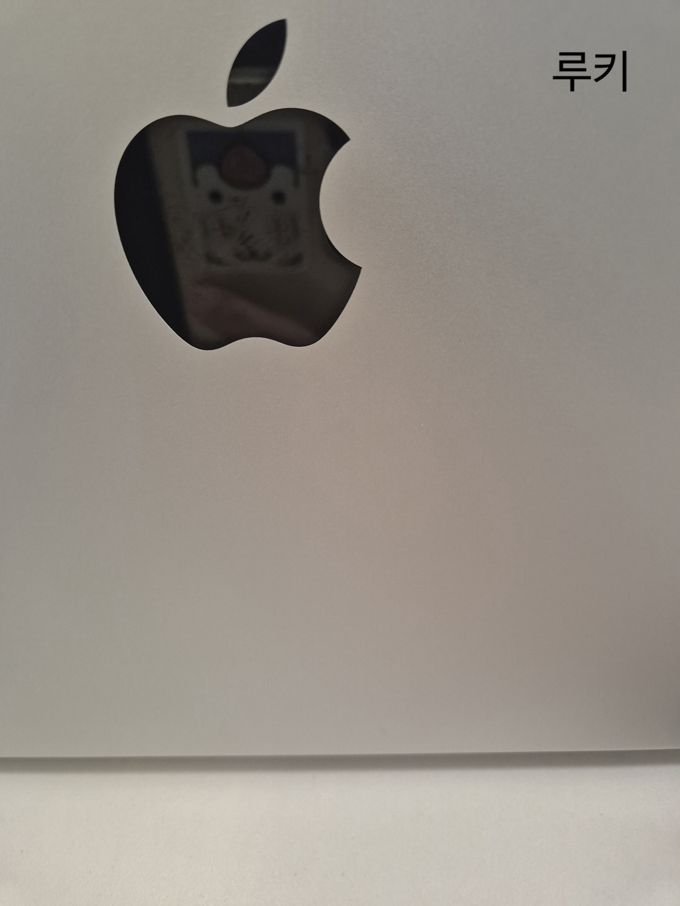

💻 구구조 노트북
Level1을 함께한 구구조의 마니또 미션으로 <노트북 로고 몰래 닦아주기> 미션을 수행했어요. 



안녕하세요, 저는 기록을 좋아하는 수양이에요. 블로그에 100개+ 이상의 포스트를 작성했으며, 2019년부터 단 하루도 빠짐없이 매일 일기를 써 오고 있어요. 기록은 제 삶의 원동력이자 저를 내일보다 더 나은 사람으로 만드는 힘이라고 생각해요. 저는 교육에도 관심이 많아요. 누군가에게 제가 알고 있는 것을 알려주는 것도 좋아하고, 반대로 배우는 것도 좋아해요. 여태까지 공부하고 싶은 분야가 생기면 스터디를 만들어서 운영해왔어요. 지금까지 7회+ 이상의 스터디를 운영하고 완료한 경험이 있어요.

나탈리는 직업적으로나 개인적으로 여러 어려움을 겪고 있지만, 그 속에서 사람들과의 관계와 자신을 돌보는 방법을 찾아가요. 특히, 고독과 일상의 반복 속에서 찾은 작은 기쁨들이 영화의 키포인트라고 느꼈어요. 주인공이 친구와 사랑하는 사람들과의 관계 속에서 성장하는 모습을 보면서, 나 역시도 내 주변 사람들과의 관계에서 무엇을 놓치고 있지 않은지 되돌아보게 되었습니다.
이 책은 단순히 환경 문제를 다룬 것이 아니라, 삶의 의미, 인간 관계, 그리고 우리가 살아가는 방식에 대해 깊이 성찰하게 만들어요. 우리가 무엇을 선택하느냐에 따라 지구의 미래가 어떻게 변할지, 그리고 각자의 삶이 어떻게 의미를 가질 수 있는지에 대해 많은 질문을 던집니다. 이 작품을 읽고 나서 내가 살아가는 환경을 더 소중히 여겨야겠다는 생각이 들었어요. 환경 보호뿐만 아니라, 나와 타인, 그리고 자연과의 관계를 되돌아보게 만든 책이에요.